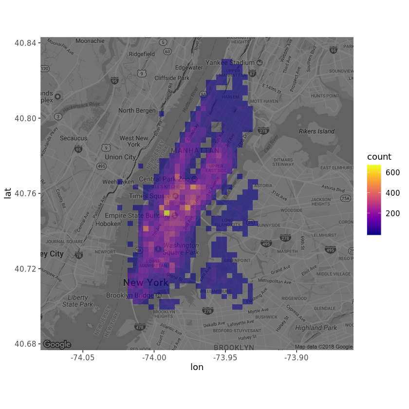

地点是否影响了收入？
建立tree模型来分析地点对于收入的影响，图显示城市南边的出租车收入更高一点。

除了地点以外，时间是否能够影响收入，在上面的树模型上加入时间变量，包括小时，日期，月份和周末，结果没有发生变化，所以可以判断影响出租车收入的只有纬度数据。使用上面的关系式引入随机森林模型，进行调参预测。

预测结果是很明显的，城南的出租车收入显著高出城北区域0.4美元。
出租车的数据有接客的地点和终点，显而易见，起点位置是盈利的开始，用起点的经纬度来绘制地图，可以看出Manhattan的城市中心是最多拉到客人的地方。

建立tree模型来分析地点对于收入的影响，图显示城市南边的出租车收入更高一点。
除了地点以外，时间是否能够影响收入，在上面的树模型上加入时间变量，包括小时，日期，月份和周末，结果没有发生变化，所以可以判断影响出租车收入的只有纬度数据。使用上面的关系式引入随机森林模型，进行调参预测。
预测结果是很明显的，城南的出租车收入显著高出城北区域0.4美元。